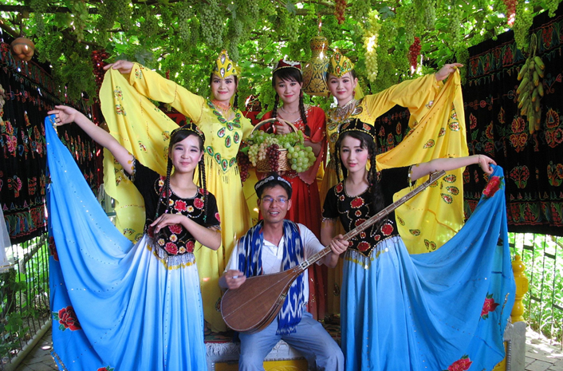
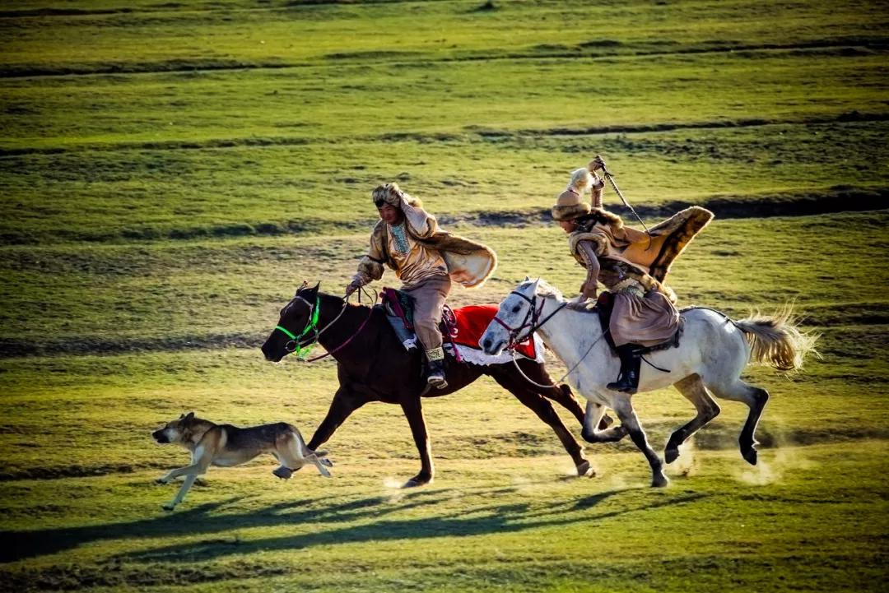

仙女节 回族服饰与回族文化 开斋节  维吾尔族传统接待礼仪  哈萨克族训鹰人 沐浴节 据说每年藏历七月上旬，在拉萨河畔，从城市到乡村，从草原到乡野，都有一个集体性的沐浴活动。这就是藏族独有的沐浴节，也叫沐浴周。说是经过此沐浴，可预防生病。当我们的汽车行驶到雅鲁藏布江边，抬眼望去，一群群一拨拨的男女老少，在水中沐浴、嬉戏、在阳光照射下的水边洗衣、晒衣，一副节日欢快景象。 回族服饰与回族文化 回族服饰是回族特有的文化现象，回族服饰文化是一个历史悠久、绚烂多彩、积淀丰厚的宝库。回族服饰的发展变化及多种形态，潜移默化地受到时代、地域以及周边兄弟民族习惯等影响，但在根本上或者说整体上，是受到伊斯兰文化对回回民族形成的深厚影响。 藏族人长相特征 藏族人最明显的特征是鼻骨高，鼻孔大，这是为适应高寒地区缺氧和寒冷所致；它们皮肤粗糙，在风吹日晒下，脸色多呈酱红色;男子脸型多呈用字，申字型，腮部咬肌发达，颧骨较高，三角眼细眯眼较多，女子圆脸，国字脸较多。